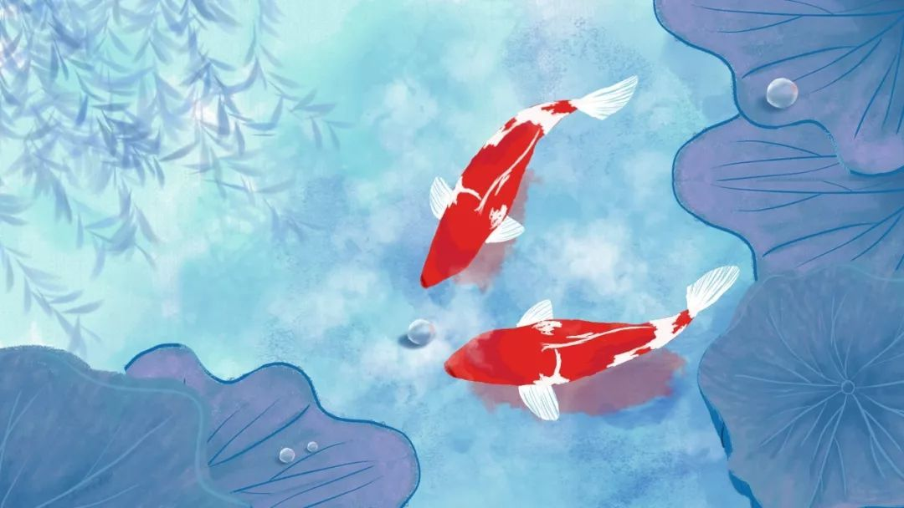

雅思，简称IELTS，中文名为国际英语语言测试系统，是由英国文化协会（即英国驻华大使馆/总领事馆文化教育处）、剑桥大学考试委员会和澳大利亚教育国际开发署共同举办的国际英语水平测试。此项考试是为申请赴英语国家（美国、英国、澳大利亚、加拿大、新西兰等）留学、移民的非英语国家学生而设，用来评定考生运用英语的能力。
剑桥雅思
剑桥雅思4-14，有音频，需要的也可以去喜马拉雅，每日英语听力等app听
口语最新5到8月机经：链接：https://pan.baidu.com/s/1ngARt3wEveSD6mgri86iIQ 提取码：1fix
杨帅最新5到8月口语题库和范例：链接：https://pan.baidu.com/s/1iiccFSMBTI7zM1PzJwdgyA 提取码：nt12
剑桥雅思4-13：链接：https://pan.baidu.com/s/1aimZmEbEZ6cSgHMNmdwfng 提取码：tnpn
剑桥雅思14：链接：https://pan.baidu.com/s/1LcvETwtfP2vQZXqW5AJRbw 提取码：jdlc
听力推荐课程
何琼听力：老师的课挺好的，听着容易上头哈！每分每秒都是干货，实打实的应试技巧，能够在短时间内减少一些非个人水平的低级错误
听力2019年04期链接：https://pan.baidu.com/s/1pTwl5iw3lscq7BTMgd9wcw 提取码：9mh2
听力2019年06期链接：链接：https://pan.baidu.com/s/1kHbMXRKDaPEcUVxoQCxvyQ 提取码：8d1h
王陆听力：褒贬不一，但相信王陆语料库大家很多都用过，她的课也有很多人反馈效率低，可以自己先听后再决定
听力2019年02期链接：https://pan.baidu.com/s/13KREOlQ7VIIsylDf3w4ElQ 提取码：k5fn
听力2019年04期链接：https://pan.baidu.com/s/19oiKlYgUapFT9UDMPu2AJQ 提取码：vjo4
周璐听力：老师有自己一套的方法，包括错题五问，TAS，听抄等，更科学和系统的提升听力水平，，时间不够的话不建议
听力2018年10期链接：https://pan.baidu.com/s/1Ckra3w31sX6a-I2Srw_VQw 提取码：q4li
教主听力链接：https://pan.baidu.com/s/1U6JHfcFY1Xcpw7lPVu0FsA 提取码：2i6w
阅读推荐课程
王希伟阅读：王希伟就是安安静静上课的老师，废话几乎不说，然后语速也刚刚好，声音也挺好听的=。=他是偏技巧性的老师，每个题型的技巧都会详细说
2019年02期链接：https://pan.baidu.com/s/1t82z1gBBou4HKnwtWnzJLQ 提取码：macc
2019年04期链接：https://pan.baidu.com/s/1ItvLDVpccrt-eZldWTrwvg 提取码：cwnr
Jack2018年11月阅读：链接：https://pan.baidu.com/s/1J0GKxTpJhzB1NWDlkbBtaA 提取码：fu09
刘洪波阅读201812期：链接：https://pan.baidu.com/s/16EfVJXnhHFeIu-jakTF8jg 提取码：a00o
郭佳荣:非常可爱的老师，表情包超多哈哈哈哈，
2019年06月链接：https://pan.baidu.com/s/1eZ7ahRw0KPxDbzlM0Vjkmg 提取码：d6ox
口语推荐课程
帅哥：杨帅的实力不用说，口语9分，以随性聊天为特色。因此，他最给学生强调的是语音语调。大部分烤鸭应该对帅哥的每日背三句和99句不陌生。他的视频课主要提供的回答思路，帮助我们打破个人心理思维壁垒，说白了就是大胆瞎扯…
2019年05期链接：https://pan.baidu.com/s/1AZcuXz-smuYGLIbDKLjWmg 提取码：ce85
2019年08期链接：https://pan.baidu.com/s/1b6d372WVZbB6SkPLR314mw 提取码：9ivj
黄翰生：他会跟你讲各种套路，但是不会像其他老师一样让你背素材虽然他喜欢开车，也有点不正经，但实际上挺接地气的。而且他是美国长大，语音木有问题
201904期链接：https://pan.baidu.com/s/1uv-Q4BGZAwYnmv5EPTKmNA 提取码：22t2
2019年02链接：https://pan.baidu.com/s/19bjjCOmvDNws7GitpZ21gA 提取码：zs7j
张天真口语，2019年5月链接：https://pan.baidu.com/s/14GJZW5OrEPz35qLRoQGX3w 提取码：gvmp
钱多多2019年5月链接：https://pan.baidu.com/s/1kmuBvv1EW317zxh6bxGstg 提取码：ecgn
于磊201901期链接：https://pan.baidu.com/s/1yhh-xl9LX8WEgTMm08e5Ow 提取码：ficp
写作推荐课程
顾加北：顾家北的书不错，但是网课因人而异
2019年04期链接：https://pan.baidu.com/s/1PM5pRln04kaSDx6HH26BzA 提取码：q0hm
2019年05期链接：https://pan.baidu.com/s/1SlaOZlfJszb6hv5jMrgopg 提取码：ordo
杜仕明：浅显易懂，干货很多，风趣幽默的老杜
2019年03期链接：https://pan.baidu.com/s/1RQd6BYq34TQmU9f4ujRx-g 提取码：8r41
2019年05期链接：https://pan.baidu.com/s/14vFL9kI4te0JnzvngM0evA 提取码：1jlz
徐卫2019年01期链接：https://pan.baidu.com/s/1Z5Kjjmp8dG_6wWmUTkR5CA 提取码：51j8